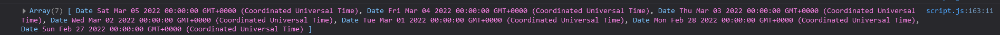

An Tuairisc
Scrúduimhir: 112757
Iniúchadh agus Plean
Réitigh uathoibrithe tí atá ann cheana
Creatlaí uathoibrithe tí
Ó ‘Hacker News'/Ycombinator (neya, Open-source home automation: Hacker News 2019), d'fhoghlaim mé faoi chreatlaí uathoibrithe tí. Ceann Mozilla agus ceann darb ainm 'Home-Assistant’.
Is féidir iad a úsáid chun monatóireacht a dhéanamh ar bhraiteoirí/ghléasanna cliste ó UI amháin.
Bheartaigh mé gan na creatlaí seo a úsáid de bharr cursaí ama ach bhí sé úsáideach toisc go bhfaca mé na tionscnaimh déanta ag an bpobal. (Home Assistant, Share your projects)
Thug daoine faoi mhíchumas neart moladh don chóras ’Home-Assistant’ (escapologybb, 2019).
Léirigh seo dom gur féidir le córais uathoibrithe tí cabhrú go mór i saolta daoine.
Réitigh fhéideartha coimre eolais
1. ETA bus
Fadhb:
- Bíonn sé deacair am an bhus a mheas
Réiteach:
- Clog a thaispeánann an t-am gur chóir an teach a thréigean
Deacaireachtaí:
- Deacair obair le API TFI
- Ní bhíonn aon bhus in Éirinn in am
- Neart aipeanna ETA ann cheana
2. Cuisneoir cliste
(Altschuler et al., Silicon Valley)
Fadhb:
- Déantar dearmad cad atá sa chuisneoir agus tú ag siopadóireacht.
- Is féidir an iomarca/easpa bhia bheith sa bhaile.
Réiteach:
- Deantán a cheanglaíonn le gnáthchuisneoirí agus a dhéanann cuisneoir cliste as
- Scanóir barrachóid chun taifead a dhéanamh ar gach rud a théann isteach sa chuisneoir
- Monatóireacht a dhéanamh ar an mbia ann agus fógra má tá táirge beagnach úsáidte suas
Deacaireachtaí:
- Níl bunachar sonraí barrachód ar fáil go poiblí
- D'fhéadfadh teocht an chuisneora cur isteach ar an déantán nó vice versa
Phioc mé an 3ú réiteach.
3. An bhfuil do phiollaí glactha?
An fhadhb:
- Tógann ~131mn Meiriceánach leigheas go laethúil (Prescription drugs 2019), ach tá sé éasca dearmad a dhéanamh iad a ghlacadh.
Réitigh atá ann faoi láthair:
Ó tvuít mhearscaipthe, tháinig mé ar na réitigh seo

(jbfan911, 2022)
(Amazon, AM PM weekly 7 Day Pill Organizer)
(Amazon, Amazon.com: TimerCap automatically displays time since ...)
1. Meabhrúchán gutháin
2. Bosca plaisteach piollaí
3. Amadóir le méid ama ó gur baineadh an caipín
Fadhbanna
- Tá ortsa a dhearbhú go bhfuil na piollaí glactha agat.
- Le huimhir 2, ag deireadh gach seachtaine, is féidir dearmad astocáil a dhéanamh.
- Do dhaoine le fadhbanna cuimhne, tá dúshlán níos mó rompu seic a dhéanamh ar an amadóir/a dhearbhú gur tógadh na taibléid.
Mo freagra ar an gcoimre eolais
- Córas a sheolann meabhrúchán má dhéantar dearmad piollaí a thógáil.
Beidh a fhios ag an déantán go huathoibríoch go bhfuil na piollaí bogtha agat, rud nach ndéanann réitigh eile.
Úsáideoirí deiridh an chórais
- Glacadóirí laethúla taibléad.
- Cúntóir baile a bheidh in ann a bheith cinnte ón deais go bhfuil a n-othar ag tógáil a dtaibléad.
Riachtanais tosaigh an chórais
![Feidhmeoidh an déantán go huathoibreach tar éis do a bheith plugáilte isteach
Braithfear nuair atá an buidéal taibléad os comhair an déantáin
Braithfear nuair a bhaintear an buidéal taibléad ón déantán
Clárófar stampa ama i mbunachar sonraí nuair a bhaintear an buidéal taibléad
Seolfar fógra má dhéantar dearmad na taibléid a thógáil roimh 6pm ar an lá sin
Beidh deais ag léiriú na sonraí bailithe i slí intuigthe don úsáideoir deiridh
Beidh leathanach logáil isteach ann roimh an deais a stopfaidh rochtain neamhúdaraithe
Feidhmeoidh an suíomh gréasáin ag ardchaighdeán sa bhrabhsálaithe Firefox agus Chrome](img/riachtasTosaighAnChorais.png)
Réitigh theicniúla fhéideartha a bhainfeadh amach cuspóirí an déantáin
Do uimhir 2/3,
Chun go bhfeicfidh an déantán na taibléid, beidh braiteoir éigin de dhíth.
Do uimhir 4/5,
Tá ríomhaire ceangailte leis an idirlíon éigeantach freisin chun a dheimhniú gur tógadh an taibléad.
Impleachtaí eiticiúla agus sóisialta a bhaineann leis an gcóras
- Sonraí leighis á mbailiú, atá an-phríobháideach.
- Baol go bhfaigheadh haiceálaí rochtain neamhúdaraithe chuig an gcóras agus monatóireacht a dhéanamh agus sonraí leighis a fháil.
Taighde níos doimhne ar an réiteach
Alt NYT
- Níl raibh alt Wirecutter (Cericola, The Best Smart Home Devices to help seniors age in place 2020) in ann táirge a mholadh toisc go bhfuil
1. Praghas ró-ard
2. sintiús ró-chostasach
3. an iomarca ceisteanna 'Más rud é...’ leo
AdhereTech
Déanann AdhereTech buidéil phiollaí cliste a sheinneann fuaim olc má dhéantar dearmad do thaibléid a thógáil (AdhereTech, adheretech.com). Níor tháinig mé ar an táirge seo ach ag deireadh an tionscnaimh.
Géilleann an táirge seo d'fhadhbanna NYT agus
- Ní roinntear staitisticí le húsáideoirí
- Níl sé ar fáil in Éirinn
Réiteoidh mo dhéantán na fadhbanna seo.
NCI
Tháinig mé ar dhalta ó NCI a rinne tionscnamh cosúil leis seo (Anicete, Final report - Encapsulate 2018). Bhí a tuairisc giota gonta is doiléir áfach.
---
Dearadh
An déantán fisiciúil
Bheartaigh mé BBC micro:bit, Raspberry Pi (RP) agus braiteoir ultrasonach a úsáid don déantán. Nascfaidh an micro:bit leis an mbraiteoir agus seolfaidh an micro:bit sonraí ón mbraiteoir ar aghaidh go dtí an RP, rud a bheidh ceangailte leis an idirlíon.
Tá roinnt braiteoirí go mbeinn in ann a úsáid:
- PIR (Braiteoir éighníomhach infridhearg)
- Ultrasanach
- Fótaileictreach
Réitigh mé ar bhraiteoir ultrasonach a úsáid toisc go raibh ceann agam cheana féin a raibh taithí agam leis.
Cheap mé ar dtús go n-úsáidfinn RP leis féin. Ach bhí deacaireachtaí agam an braiteoir a cheangail go díreach leis an RP. Tagann mo bhraiteoir ultrasonach ó phacáiste tosaigh Seeed Studio/Grove, atá in oiriúnt do BBC micro:bit. Dá bharr, b'éigean dom an micro:bit a cheangail leis an RP in áit a lán ama a chaitheamh ag nascadh an bhraiteora go díreach leis an RP agus ag streachailt le pionnaí GPIO (rud nach bhfuil taithí agam leis)
(Jcquetin, Valise Grove pour micro:bit 2022)
(Raspberry Pi, Getting Started with the micro:bit - Plugging in your micro:bit)
(Macfos, Interfacing ultrasonic sensor with Raspberry Pi: A beginner's guide 2021)
Shocraigh mé ar Firebase a úsáid don bhunachar sonraí toisc raibh taithí agam leis ó na ALTanna
Bainfidh mé úsáid as dialann foghlama chun cabhrú leis an tuairisc a scríobh. Beidh stór GitLab in úsáid freisin chun ord is eagar a chur ar an tionscnamh.
Riachtanais an úsáideora deiridh
1. Beidh an déantán inrochtana ar aon líne leis na 7 bPrionsabal Dearaidh Uilíoch (NDA, The 7 principles)
2. Seolfar fógra má dhéantar dearmad an taibléad a thógáil
3. Beidh deais staitisticí ann le laethanta ar tógadh agus nár tógadh an taibléad
Scéalta úsáideoirí
Chum mé scéalta úsáideoirí chun cabhrú liom na riachtanais a chruthú.
Leasaigh mé riachtanais tosaigh an chórais.
Riachtanais an chórais
1. Feidhmeoidh an déantán go huathoibríoch tar éis do a bheith plugáilte isteach
2. Braithfear nuair atá an buidéal taibléad os comhair an déantáin
3. Braithfear nuair a bhaintear an buidéal taibléad ón déantán
4. Clárófar stampa ama i mbunachar sonraí nuair a bhaintear an buidéal taibléad
5. Seicfear ag 6pm chuile lá stádas tógáil an taibléid
6. Murar tógadh an taibléad roimh 6pm, seolfar fógra chuig an úsáideoir deiridh ag rá leo nár tógadh an taibléad
7. Beidh deais ag léiriú na sonraí bailithe ón déantán i bhfoirm ghrafach don úsáideoir deiridh
8. Beidh leathanach logáil isteach chuig an deais nach nglacfaidh ach le sonraí bailí atá réamhbheartaithe ag an úsáideoir deiridh
9. Feidhmeoidh chuile leathanach ar an suíomh gréasáin gan aon earráidí consól sna brabhsálaithe Firefox agus Chrome agus iad ag feidhmiú leis na nuashonruithe is déanaí
Léaráid ailtireachta
Tríd an miondealú, bhris mé mo chóras síos ina réimsí éagsúla:
1. Suíomh gréasáin
2. Raspberry Pi
3. BBC micro:bit
4. Firebase
Ó radharc ardleibhéil, leanfaidh an déantán fisiciúil an tsreabhchairt seo a leanas
An chaoi a líonfar riachtanais an chórais
Líonfaidh an déantán fisiciúil riachtanais 1, 2, 3
1. Rithfidh script an déantáin go huathoibríoch
2. Gheofar na sonraí seo ón mbraiteoir
3. Gheofar na sonraí seo ón mbraiteoir
Líonfaidh an bunachar sonraí agus déantán fisiciúil riachtanas 4, 5, 6
4. Seolfar na sonraí chuig Firebase
5. Rithfidh an script ar an déantán
6. Rithfidh an script ar an déantán
Líonfaidh an bunachar sonraí agus leathanach deaise riachtanas 7
7. Beidh JS ag nascadh na deaise agus Firebase
Líonfaidh an leathanach deaise riachtanas 8
8. Beidh seiceálacha bailíochtaithe á bhfeidhmiú
Líonfaidh an suíomh gréasáin riachtanas 9
9. Ní bheidh aon earráidí sa chonsól
Feidhmeanna na deaise
Léaráid cás úsáidte UML
Léiríonn an graf seo na feidhmeanna a bheidh ag an leathanach deaise
Chruthaigh mé an graf seo toisc go mbeidh úsáideoirí ag idirghníomhú leis an deais (murab ionann agus an Raspberry Pi agus micro:bit)
Súdachód an déantáin fhisiciúil
micro:bit
Raspberry Pi
---
Feidhmiú agus Tástáil
Forbairt an déantáin
Seachtain 1 agus 2
- Neart taighde agus pleanála
- Chruthaigh mé lógó an chomhlachta
- Phioc mé ainm don ghnó
- Roghnaigh mé smaoineamh maidir le meabhrúchán piollaí a dhéanamh
Ag teacht suas le hainm an ghnó
Seachtain 3
- 'Cnámha' na leathanaigh Fúinn agus Bailte cruthaithe
- De dheasca é a fheiceáil ar neart suíomhanna nua-aimseartha agus mo bhreiseán brabhsálaí Tabliss (Tabliss, Tabliss · A beautiful New Tab page for Firefox and Chrome), chuir mé saobhdhiallas agus mór-íomhá thosaigh (Hero) ar mo shuíomh
- Chuir mé cód ó W3Schools in oiriúint do sin
Leathanach Baile
- Thosaigh mé ag triail an micro:bit agus Pi a fháil ag labhairt lena chéile ach ní raibh sé go hiomlán éasca. Bhí orm ag iomrascáil leis an gcód ar an dá thaobh go dtí gur éist siad lena chéile
- Bhí soláthar cumhachta breise á lorg ag an mbraiteoir freisin
- Is féidir leis an micro:bit sonraí a sheoladh chuig an Pi anois ach níl an braiteoir ag feidhmiú go fóill
Seachtain 4
- Thosaigh mé ar an gcód Python ar an Pi a sheolann sonraí chuig Firebase (firebase.py)
- Bhí deacaireachtaí agam an leagan amach a fháil i gceart. B'éigean dom atriail go dtí gur shocraigh mé ar an leagan amach seo a úsáid:
- Seoltar stampa Unix in éineacht leis an stampa aistrithe chun cúrsaí a dhéanamh níos éasca síos an bóthar
Seachtain 5
- Tá an micro:bit agus Pi ag obair leis an mbraiteoir anois
- Le linn tástálacha, thug mé faoi dheara go raibh an braiteoir ró-íogair
- Tháinig mé sa deireadh ar an scothspota áit nach bhfuil sé ró-íogair nó neamhíogair, ach foirfe
- Chruthaigh mé rphost.py, a sheolann rphost mura dtógtar taibléad an lá sin
- B’éigean dom rphost tánaisteach a úsáid toisc go raibh orm 2FA a bhaint chun é a fháil ag obair.
- Tá Gmail ag dímholadh 'Less secure app access' ag deireadh mhí Bhealtaine rud a chiallaíonn go mbeidh orm seoladh rphoist ó sholáthróir eile a úsáid chun go n-oibreoidh an cód seo sa todhchaí.
- D’fhoghlaim mé freisin faoin daeman cron agus conas é a úsáid chun go ritheann rphost.py ag 6pm gach lá agus listener.py ag gach bútáil.
- Toisc nach raibh taithí agam leis seo cheana, thóg sé giota ama é a chuir faoi lán seoil
(Lámhleabhar Linux)
- In áit mhaith a raibh mé anseo.
- Déantán ag feidhmiú le rphost má dhéantar dearmad agus sonraí ar Firebase nuair a thógtar taibléid
Seachtain 6
- Tús le deais.html. Nasc mé le Firebase é
deais.html
- Rinne mé na leathanaigh a optamú do ghutháin agus scáileáin bheaga. Bhain mé leas as na huirlisí forbróirí i mbrabhsálaithe éagsúla
- Leathanach fuinn.html agus tuairisc.html cruthaithe. Leagan amach céanna orthu
- Obair ar an index.html
- Beochan CSS ‘IT’ cruthaithe
Seachtain 7
- Tuilleadh oibre ar deais.html
- Bhí deacaireachtaí agam na sonraí ó Firebase a láimhseáil isteach sna grafanna
- Dá bharr, d’athraigh mé na sonraí go dtí oibiachtaí dáta. Bheinn níos fearr as sonraí an déantáin a sheoladh go Firebase mar oibiacht dáta ón tús. I dtús na haicíde is fusa í a leigheas mar a deirtear.
- Chun é seo a dhéanamh, bhí orm 2000 a shuimiú leis an mbliain toisc go raibh sé stóráilte le dhá dhigit i Firebase
- Ar Firebase, ghlac mé leis go dtosaíonn an chéad mhí ag 1 ach le hoibiachtaí dátá, tosaíonn siad ag 0. Bhí orm 1 a bhaint chun an oibiacht a fháil i gceart
Bhí coinníoll ráis agam:
- Faic sna grafanna má tá Firebase ró-mhall ag seoladh sonraí
Réiteach:
- window.onload agus sleep() sula ritear na feidhmeanna
Seachtain 8
- Leathanach logail.html cruthaithe
NB: Seo na sonraí logála isteach don Deais:
Rphost: sampla@sampla.com
Pasfhocal: pasfhocal
- Íomhá randamach nuair a athnuaitear an leathanach
- Geamhú ar an leathanach
- Obair ar an leathanach Baile arís
- Saobhdhiallas le scrolláil
- Beochaintí téacs le scrolláil
- Cnaipe ‘Barr an leathanaigh’
Seachtain 9
- Leagan amach deais.html
- Téacs ar fuinn.html scríofa
- tuairisc.html: Barra ar dheis
- Tháinig mé ar chlúdach don déantán fisiciúil.
- Chruthaigh mé an físeán.
- Ionspráid ó ghnéchláir fhógraíochta. Mar thaighde, d’fhéach mé ar chnuasaigh dóibh ar YouTube (Americans will buy ANYTHING 1! Top 10 Worst Infomercials 2012).
- Script agus seatanna ceamara.
- Eagarthóireacht le Premiere Pro.
Seachtain 10 agus 11
- Tuairisc á scríobh ó na nótaí a bhreac mé le linn an tionscnaimh.
- Tháinig mé ar an táirge seo i Meiriceá. Piollaí cliste (FDA, FDA approves pill with sensor that digitally tracks if patients have ingested their medication). Taibléid le slis iontu a sheolann fógra má dhíleáitear iad. Tá fadhbanna a braith mé leis seo ná go bhfuil sé i bhfad ró-chostasach, tá baol go ndéanfar dochar do do chorp agus níleadar ar fáil in Éirinn.
Seachtain 12
- Seachtain breise ar eagla na heagla.
- Mionrudaí chun snas a chur ar an suíomh agus ceartúchán ar an nGaeilge.
Físeán
Seo fógra a taispeánadh den chéad uair ag an Ard-Fheis idirnáisiúnta IT is déanaí.
An cód
Léaráid ghníomhaíochta UML
micro:bit
microbit.hex
Raspberry Pi
listener.py

firebase.py
rphost.py

Tástáil
micro:bit
Le tástáil 3, shocraigh mé íogaireacht an bhraiteora go dtí gur phas an tástáil seo gach uair.
Raspberry Pi

I tástáil 3, bhí fadhb bheag agam le líne 18 sa script. Bhí an cosán mícheart á thógáil ag os.system() ag iarraidh teacht ar an script firebase.py
Le tástáil 6, bhí botún déanta agam i mo chomhad crontab.
Le tástáil 9, b'éigean dom an rphost a sheoladh trí UTF-8 in áit ASCII toisc go raibh sínte fada sa rphost.
Tá na fadhbanna seo go léir réitithe agam anois.
Suíomh gréasáin
Le huimhir 4, bhí an cód ag streachailt le ag dul ón gcéad lá de mhí siar go dtí mí eile. Réitigh an oibiacht dáta í seo.
---
Measúnú
Táim sásta leis an méid a bhain mé amach leis an táirge deiridh. Rinne mé botúin áfach go gceartóinn dá ndéanfainn arís é.
- Chaith mé an iomarca ama ar an deais, ag streachailt leis na grafanna a fháil cruinn.
- Níor chaith mé a ndóthain ama ar an tuairisc luath sa phróiseas.
- Deacaireachtaí cloí leis an teorann focal.
Bhí cuar foghlama i gceist leis an tionscnamh seo. D'fhoghlaim mé faoi
- Códú Python/JS agus conas an asbhaint a chur chun cinn.
- HTML/CSS. Conas suíomh nua-aimseartha a chruthú.
- SSH/cron/orduithe Linux.
- Git/GitLab.
Riachtanais an chórais
Riachtanais na coimre eolais
Bunriachtanais
Ardriachtanais
Tá inrochtaineacht páirtlíonta toisc go ndúirt an cigire inrochtaineachta Firefox nach bhfuil a ndóthain codarsnachta idir téacs agus cúlra an téacs. Thriail mé seo a réiteach ach níor éirigh liom dathanna oiriúnacha deasa a aimsiú.
Riachtanais an úsáideora deiridh
Tá téacs malartach ar gach leathanach ach toisc gearráin Firefox, ní chreidim go líontar na prionsabail dearaidh uilíoch go hiomlán.
Feabhsú an déantáin in atriallta den timthriall dearaidh
- Aip a chruthú
- Feidhmiúlacht do níos mó ná taibléad amháin gach lá
- An t-am a ndéantar seic ar tógadh an leigheas a bheith inathraithe
- Rphost míosúil staitisticí chugat/chuig do dhochtúir
- Nascadh le creatlaigh eile
- SIM/Wi-Fi a úsáid
- Fógra mura gcuirtear an buidéal ar ais
- Téacs mar rogha d’fhógraí
- Abair ag tús na míosa méid taibléad. Fógra nuair atá tú íseal
- Pacáistiú crua-earraí/laghdaithe (Braiteoir nascaithe go díreach le Pi gan micro:bit)
- Aistriúchán go teangacha AE eile
Feidhmithe féideartha breise an déantáin
- Eochaireacha in áit taibléid. Fógra mura dtógtar leat iad agus tú ag fágáil an tí
- Cois leaba, aláram mura ndúisítear
- Meabhrúchán plandaí a uiscigh (smaoineamh céanna ag an dalta NCI (Anicete, Final report - Encapsulate 2018))
---
Tagairtí
AdhereTech, adheretech.com. Ar fáil ag: https://www.adheretech.com/ [Dáta rochtana 9 Márta 2022].
Aftab, N., email validation in JavaScript. Ar fáil ag: https://linuxhint.com/email-validation-javascript/ [Dáta rochtana 9 Márta 2022].
Altschuler, J., Judge, M. & Krinsky, D., Silicon Valley.
Amazon, AM PM weekly 7 Day Pill Organizer, Sukuos Large Daily Pill cases pill box with easy push button design for pills/vitamin/fish oil/supplements (rainbow) : Amazon.co.uk: Health & Personal Care. AM PM Weekly 7 Day Pill Organizer. Ar fáil ag: https://www.amazon.co.uk/Organizer-Sukuos-Vitamin-Supplements-Rainbow/dp/B07MF6KSDM [Dáta rochtana 9 Márta 2022].
Amazon, Amazon.com: TimerCap automatically displays time since ... Ar fáil ag: https://www.amazon.com/TimerCap-Automatically-Displays-Opened-Built/dp/B00EZ6TL2S [Dáta rochtana 9 Márta 2022].
Anicete, A., 2018. Final report - Encapsulate. Ar fáil ag: https://norma.ncirl.ie/3472/1/amandaanicete.pdf [Dáta rochtana 9 Márta 2022].
Animista, Ar fáil ag: https://animista.net/ [Dáta rochtana 9 Márta 2022].
Bechtel, J., 2016. How to subtract days from a plain Date? Ar fáil ag: https://stackoverflow.com/a/40915816 [Dáta rochtana 9 Márta 2022].
Cericola, R., 2020. The Best Smart Home Devices to help seniors age in place. The New York Times. Ar fáil ag: https://www.nytimes.com/wirecutter/reviews/smart-home-for-seniors/ [Dáta rochtana 9 Márta 2022].
Chris, 2020. check date against an array of dates. Ar fáil ag: https://stackoverflow.com/a/39899589 [Dáta rochtana 9 Márta 2022].
Clark, A., 1982. Summer Nights 2.
Cotoaga, K., 2019. Ar fáil ag: https://unsplash.com/photos/mkROo_db9uE [Dáta rochtana 9 Márta 2022].
Dascalescu, D., 2022. What is the JavaScript version of sleep()? Ar fáil ag: https://stackoverflow.com/a/39914235 [Dáta rochtana 9 Márta 2022].
Delaney, J., 2020. How to Create an HTML Contact Form from Scratch. Available at: https://paperform.co/blog/html-contact-form/ [Accessed March 9, 2022].
Edwards, S., 2020. OCR A Level Computer Science Project Demo. Ar fáil ag: https://www.youtube.com/watch?v=JdoBpZPeFGk [Dáta rochtana 9 Márta 2022].
escapologybb, 2019. Just wanted to say that my life as a quadriplegic would be 13.4 million percent ...: Hacker News. Just wanted to say that my life as a quadriplegic would be 13.4 million percent ... | Hacker News. Ar fáil ag: https://news.ycombinator.com/item?id=21666909 [Dáta rochtana 9 Márta 2022].
FDA, FDA approves pill with sensor that digitally tracks if patients have ingested their medication. U.S. Food and Drug Administration. Ar fáil ag: https://www.fda.gov/news-events/press-announcements/fda-approves-pill-sensor-digitally-tracks-if-patients-have-ingested-their-medication [Dáta rochtana 9 Márta 2022].
Hasan, M., 2021. Calculate Days Between Two Dates in JavaScript. Ar fáil ag: https://web.archive.org/web/20210625150157/https://www.codecheef.org/article/calculate-days-between-two-dates-in-javascript [Dáta rochtana 9 Márta 2022].
hellojardo, 2017. Mt. Solitaire Sunset, Ar fáil ag: https://unsplash.com/photos/c1uSwK9m8j0 [Dáta rochtana 9 Márta 2022].
Home Assistant, Share your projects. Ar fáil ag: https://community.home-assistant.io/c/projects/ [Dáta rochtana 9 Márta 2022].
jbfan911, 2022. Taking my meds two minutes ago and being like ummmm did I take my meds or did I imagine that. Twitter. Ar fáil ag: https://twitter.com/jbfan911/status/1492210155676700672?s=20&t=_jYlT1cRl7CPAAy4PtnNCQ [Dáta rochtana 9 Márta 2022].
Jcquetin, P., 2022. Valise Grove pour micro:bit. arduiblog. Ar fáil ag: https://arduiblog.com/2020/03/16/valise-grove-pour-microbit/ [Dáta rochtana 9 Márta 2022].
Langen, J.de, Sending Emails With Python. Ar fáil ag: https://realpython.com/python-send-email/#sending-fancy-emails [Dáta rochtana 9 Márta 2022].
Linux, Lámhleabhar Linux. Cron(8) - linux manual page. Ar fáil ag: https://man7.org/linux/man-pages/man8/cron.8.html [Dáta rochtana 9 Márta 2022].
Lucidchart, 2018. UML Use Case Diagram Tutorial. Ar fáil ag: https://www.youtube.com/watch?v=zid-MVo7M-E [Dáta rochtana 9 Márta 2022].
Macfos, 2021. Interfacing ultrasonic sensor with Raspberry Pi: A beginner's guide. Robu.in | Indian Online Store | RC Hobby | Robotics. Ar fáil ag: https://robu.in/raspberry-pi-ultrasonic-sensor-interface-tutorial/ [Dáta rochtana 9 Márta 2022].
Mills, K., 2018. Beautiful Free Images & Pictures. Ar fáil ag: https://unsplash.com/photos/MF9Wy1NA55I [Dáta rochtana 9 Márta 2022].
Miroshnichenko, T., 2021. A Ticking Clock, Ar fáil ag: https://www.pexels.com/video/a-ticking-clock-7033786/ [Dáta rochtana 9 Márta 2022].
NASA, 2015. Beautiful Free Images and Pictures. Ar fáil ag: https://unsplash.com/photos/Q1p7bh3SHj8 [Dáta rochtana 9 Márta 2022].
NDA, The 7 principles. Centre for Excellence in Universal Design. Ar fáil ag: https://universaldesign.ie/what-is-universal-design/the-7-principles/ [Dáta rochtana 9 Márta 2022].
neya, 2019. Open-source home automation: Hacker News. Open-Source Home Automation | Hacker News. Ar fáil ag: https://news.ycombinator.com/item?id=21665125 [Dáta rochtana 9 Márta 2022].
Ollscoil Georgetown, 2019. Prescription drugs. Health Policy Institute. Ar fáil ag: https://hpi.georgetown.edu/rxdrugs/ [Dáta rochtana 9 Márta 2022].
Onojeghuo, C., 2018. Beautiful Free Images and Pictures. Ar fáil ag: https://unsplash.com/photos/P8g80g8L8Ok [Dáta rochtana 9 Márta 2022].
Raspberry Pi, Getting Started with the micro:bit - Plugging in your micro:bit. Projects.raspberrypi.org. Ar fáil ag: https://projects.raspberrypi.org/en/projects/getting-started-with-microbit/4 [Dáta rochtana 9 Márta 2022].
Riggin, K., 2022. Ar fáil ag: https://unsplash.com/photos/zoQpeA_BK8M [Dáta rochtana 9 Márta 2022].
Slidebean, 2019. Startup office desk with black chairs and whiteboard, Ar fáil ag: https://unsplash.com/photos/6MtJ-y1hzTs [Dáta rochtana 9 Márta 2022].
Slidebean, 2019. Startup office space, with spiral stairs, Ar fáil ag: https://unsplash.com/photos/GKKTxpNghBc [Dáta rochtana 9 Márta 2022].
Slidebean, 2019. Startup office with a ping-pong table and desk, Ar fáil ag: https://unsplash.com/photos/TpGIpUF67po [Dáta rochtana 9 Márta 2022].
Tabliss, Tabliss · A beautiful New Tab page for Firefox and Chrome. Ar fáil ag: https://tabliss.io/ [Dáta rochtana 9 Márta 2022].
thejokerspeaks, 2012. Americans will buy ANYTHING 1! Top 10 Worst Infomercials. Ar fáil ag: https://www.youtube.com/watch?v=6llB5QR1Nmc [Dáta rochtana 9 Márta 2022].
Vanermen, F., 2022. Ar fáil ag: https://unsplash.com/photos/ZDTj2Ismxl0 [Dáta rochtana 9 Márta 2022].
Vertava Health Texas, 2017. Ar fáil ag: https://vertavahealthtexas.com/wp-content/uploads/2017/04/Pill-Bottle-on-White.png [Dáta rochtana 9 Márta 2022].
W3Schools, CSS @keyframes Rule. Ar fáil ag: https://www.w3schools.com/cssref/css3_pr_animation-keyframes.asp [Dáta rochtana 9 Márta 2022].
W3Schools, CSS @media Rule. Ar fáil ag: https://www.w3schools.com/cssref/css3_pr_mediaquery.asp [Dáta rochtana 9 Márta 2022].
W3Schools, How TO - Icon Bar. Ar fáil ag: https://www.w3schools.com/howto/howto_css_icon_bar.asp [Dáta rochtana 9 Márta 2022].
W3Schools, How TO - Parallax Scrolling. Ar fáil ag: https://www.w3schools.com/howto/howto_css_parallax.asp [Dáta rochtana 9 Márta 2022].
W3Schools, HTML DOM Element scrollTop. Ar fáil ag: https://www.w3schools.com/jsref/prop_element_scrolltop.asp [Dáta rochtana 9 Márta 2022].
W3Schools, W3.CSS Sidebar. Ar fáil ag: https://www.w3schools.com/w3css/w3css_sidebar.asp [Dáta rochtana 9 Márta 2022].
---
Líon na bhfocal
| Ceannlíne | Méid focal |
|---|---|
| Iniúchadh agus Plean | 590 |
| Dearadh | 600 |
| Feidhmiú agus Tástáil | 960 |
| Measúnú | 298 |
| Iomlán | 2,448 |